Are there distinct foraging strategies among these seals?

EDS 232
Lesson 12
K-Means Clustering
A guiding example
Consider Amanda from our first lesson. She records dive depth (meters) and dive duration (minutes) for a large number of northern elephant seals. The question she investigates is:
Are there distinct foraging strategies among these seals?
Clustering finds subgroups in a dataset so that observations within a cluster are similar to each other and different from observations in other clusters.
. . .
Unlike classification, there is no response variable \(Y\): no prior labels, no “correct answer.”
Clustering is a type of unsupervised method: we discover structure within the data rather than predicting a known outcome.
. . .
PCA is another unsupervised method we have studied: it finds a low-dimensional representation of the observations that explains a large fraction of the variance.
The algorithm
A centroid is the average position of a set of points: the “center of mass” of the group.
Example
| Obs. | Depth \(x_1\) | Duration \(x_2\) | Cluster |
|---|---|---|---|
| 1 | 60 | 18 | A |
| 2 | 210 | 6 | A |
| 3 | 150 | 15 | A |
| 4 | 240 | 26 | B |
| 5 | 330 | 11 | B |
| 6 | 360 | 29 | B |
A centroid is the average position of a set of points: the “center of mass” of the group.
Example
| Obs. | Depth \(x_1\) | Duration \(x_2\) | Cluster |
|---|---|---|---|
| 1 | 60 | 18 | A |
| 2 | 210 | 6 | A |
| 3 | 150 | 15 | A |
| 4 | 240 | 26 | B |
| 5 | 330 | 11 | B |
| 6 | 360 | 29 | B |
Centroid of cluster A:
\[\bar{x}^{(A)} = \left(\frac{60 + 210 + 150}{3},\; \frac{18 + 6 + 15}{3}\right) = (140,\; 13)\]
Centroid of cluster B:
\[\bar{x}^{(B)} = \left(\frac{240 + 330 + 360}{3},\; \frac{26 + 11 + 29}{3}\right) = (310,\; 22)\]

For a good clustering, observations within each cluster should be as similar as possible. We measure this with within-cluster variation:
\[W(C_k) = \frac{1}{|C_k|} \sum_{i,\, i' \in C_k} \;\sum_{j=1}^{p} (x_{ij} - x_{i'j})^2\]
\(|C_k|\) = number of observations in cluster \(C_k\). \(p\) = number of features

We want to find \(K\) clusters that minimize the total within-cluster variation across all clusters:
\[\underset{C_1, \ldots, C_K}{\text{minimize}} \left\{ \sum_{k=1}^{K} W(C_k) \right\}\]
. . .
The \(K\)-means algorithm finds an approximate solution to this minimization through a simple iterative procedure.
Initialize: randomly select \(K\) observations from the dataset as the initial centroids.
Assign: assign each observation to the cluster whose centroid is nearest (smallest Euclidean distance).
Update centroids: compute the new centroid (mean) of each cluster.
Repeat steps 2–3 until assignments no longer change.
Every iteration is guaranteed to decrease (or maintain) the total within-cluster variation, so the algorithm always converges. However, it does not always converge to the global minimum!
. . .
The clustering illustrations in the following slides were created by Dr. Allison Horst.
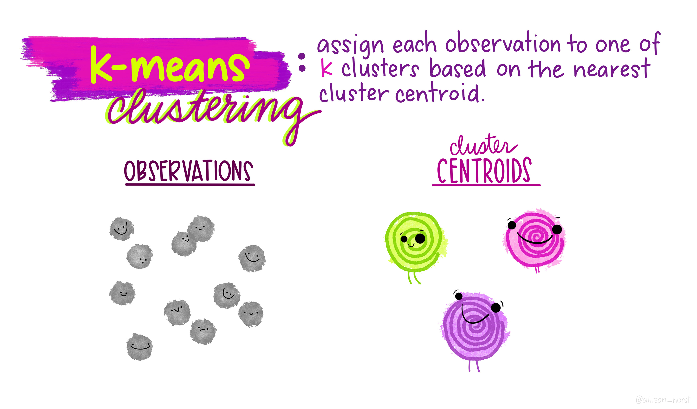
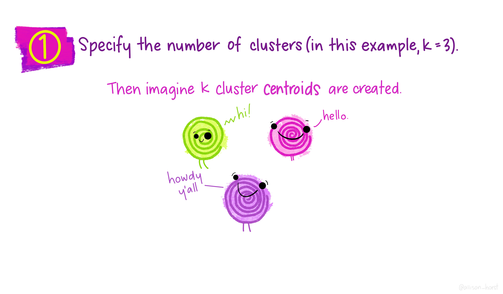
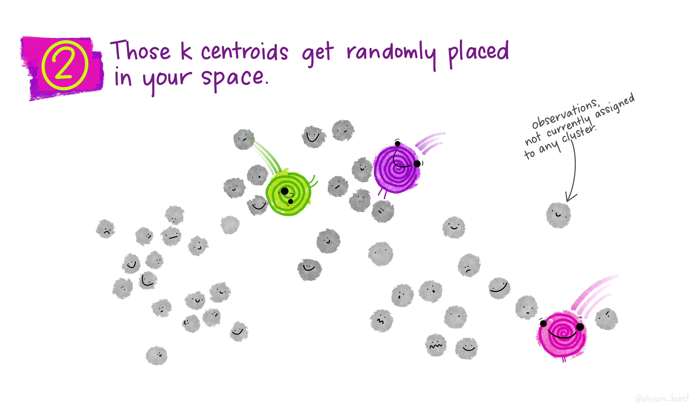
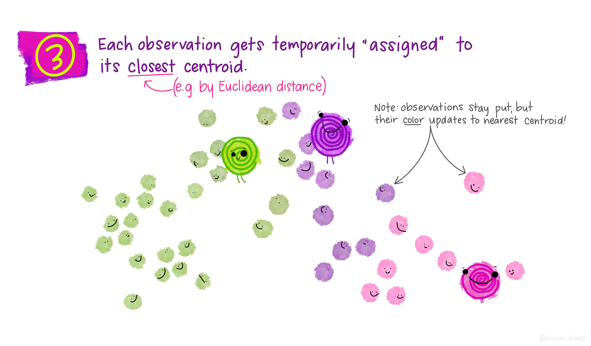
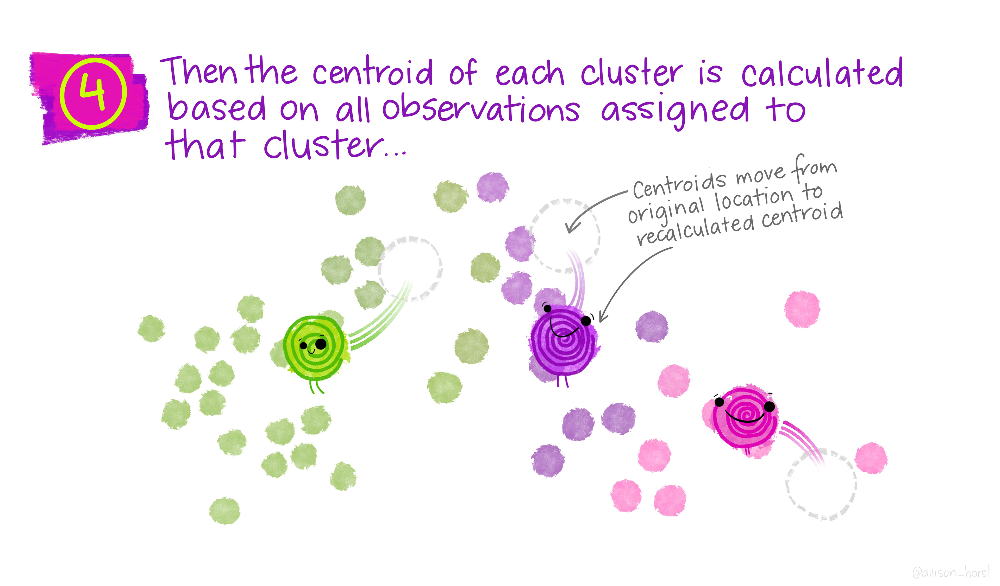
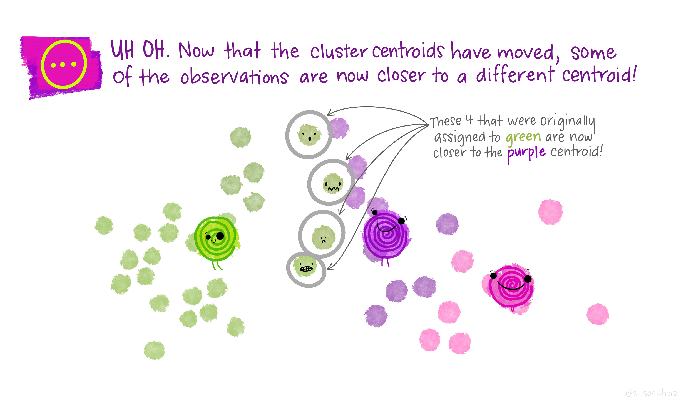
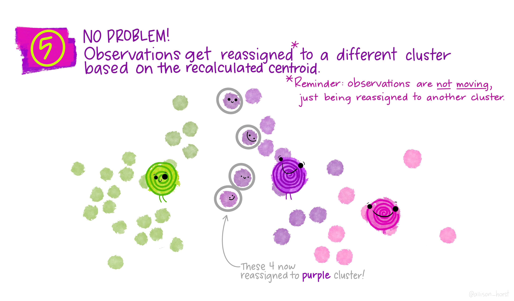
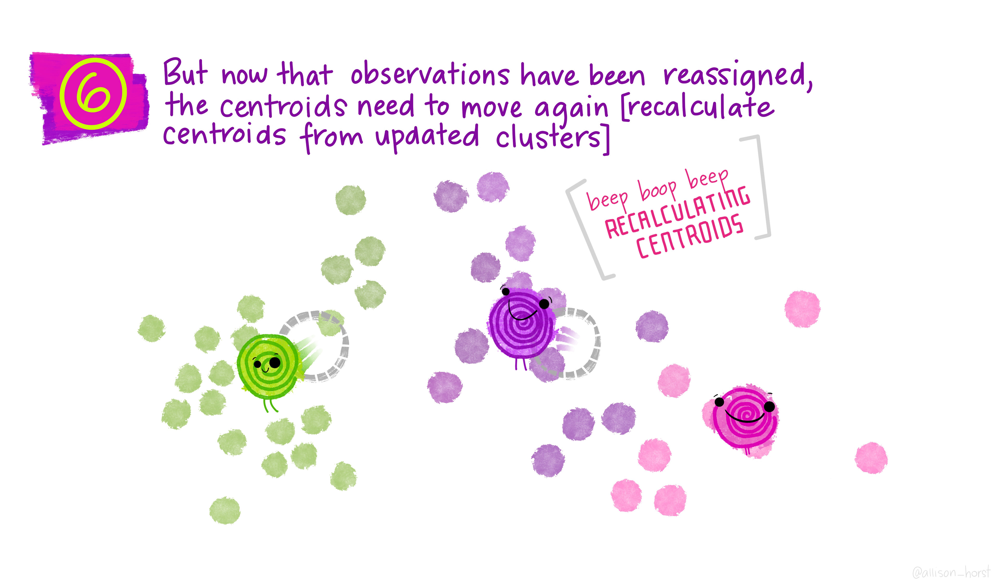
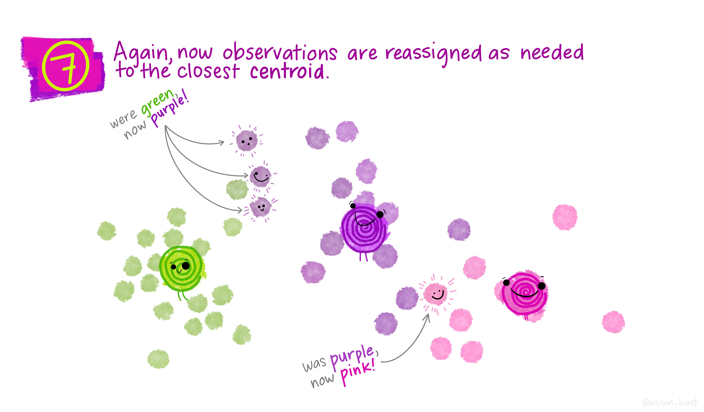
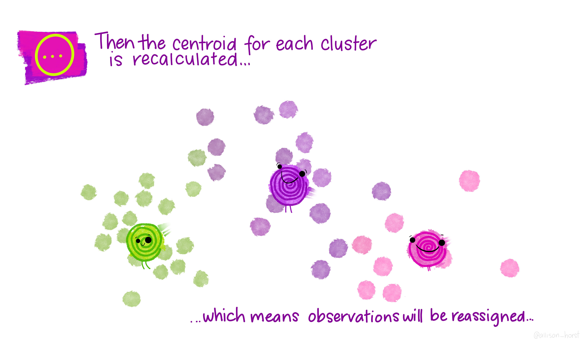
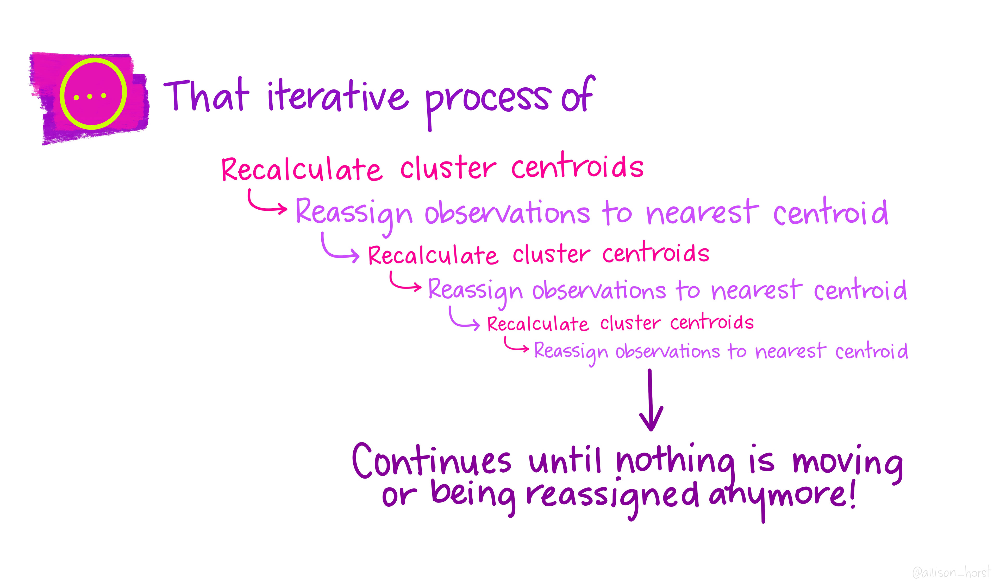
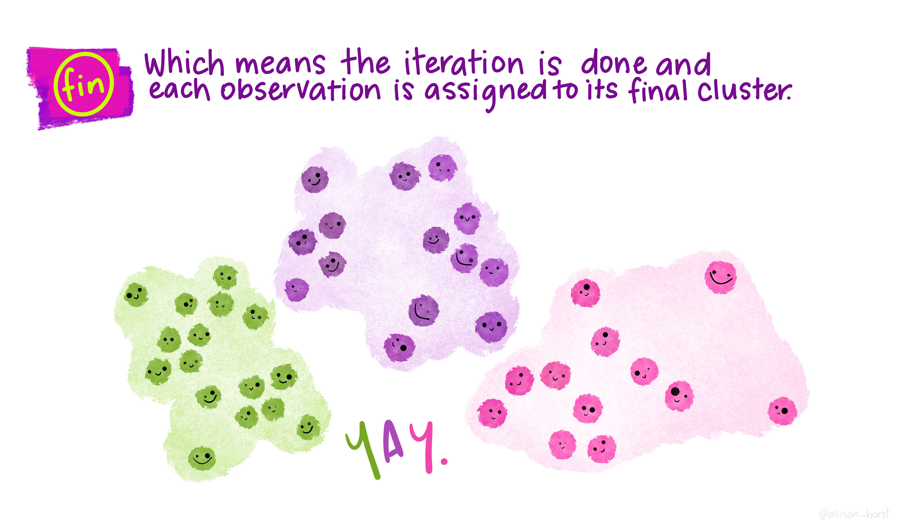
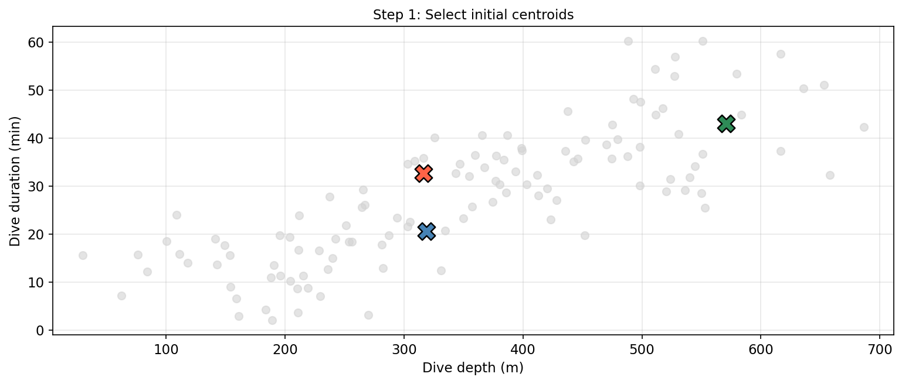
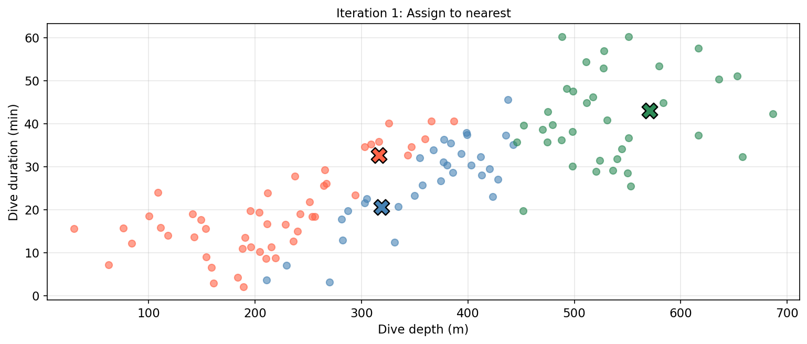
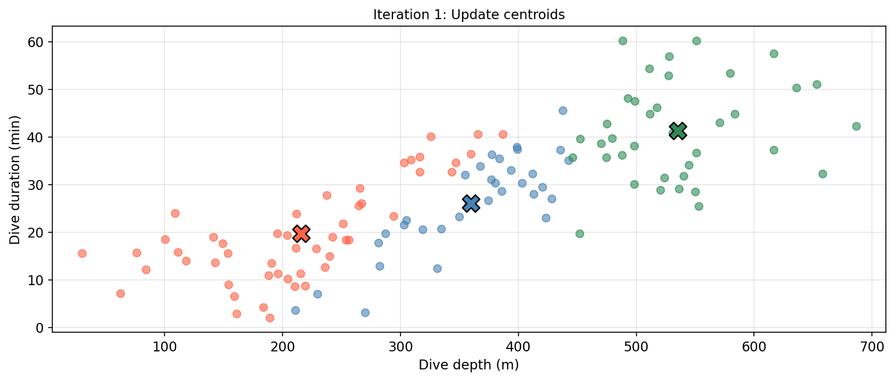
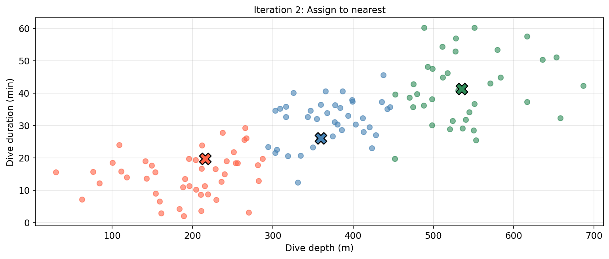
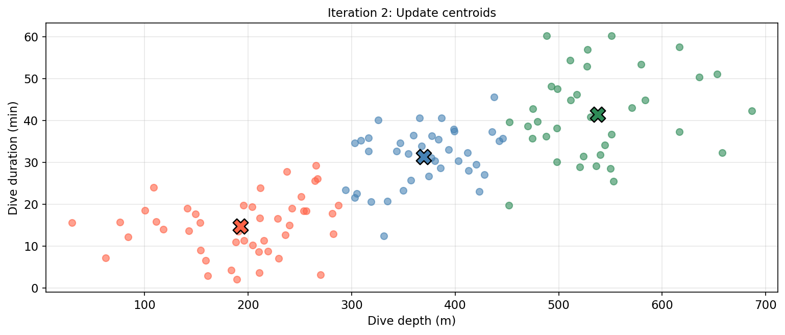
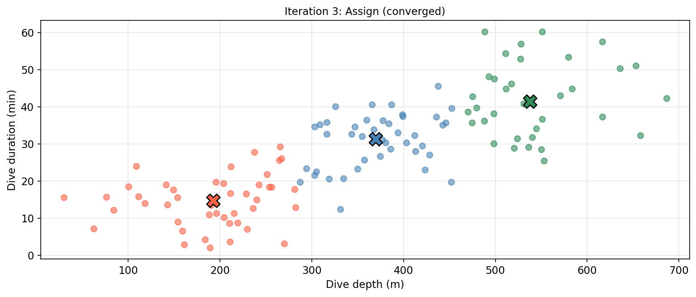
Considerations
Different random initializations can lead to different final clusterings — the algorithm finds a local minimum, not necessarily the global one.
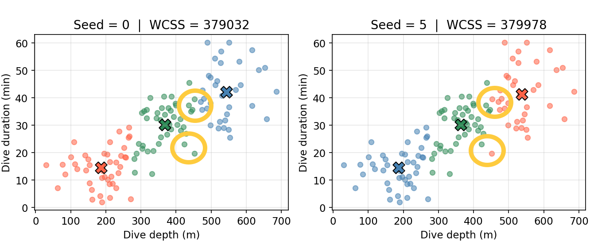
Run \(K\)-means several times with different initializations and keep the solution with the lowest within cluster variation.
\(K\) is a hyperparameter chosen before running the algorithm. The elbow method: fit \(K\)-means for a range of \(K\) values and plot within-cluster variation vs. \(K\). The elbow (where the rate of decrease flattens) suggests a reasonable value of \(K\).

Choosing \(K\) also depends on what is practically meaningful or interpretable in the applied context.
Clusters will always be found. The algorithm partitions observations regardless of whether true subgroups exist!
Clustering with different parameter choices (different \(K\), different initializations) will produce variable results.
The output should not be taken as absolute truth, but rather as a starting point for generating hypotheses and guiding further study.
. . .
In Amanda’s case, the clusters may correspond to real foraging strategies, but they could also reflect individual variation, seasonal patterns, or even artifacts of data collection.
That’s it for EDS 232!